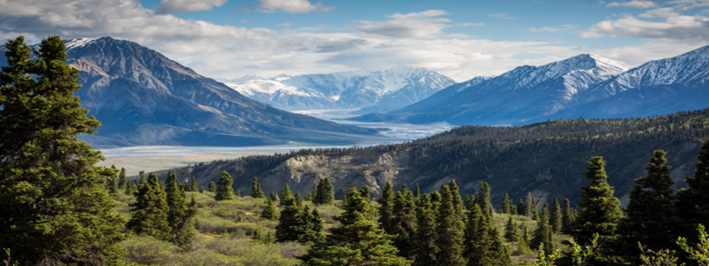

Un día en la naturaleza
Pasar un día en la naturaleza es una de las mejores formas de reconectar contigo mismo. Desde el sonido del viento entre los árboles hasta el olor del suelo húmedo después de la lluvia, cada experiencia tiene el poder de relajarte y recargar tu energía.
¿Sabías que caminar por la naturaleza mejora el ánimo y reduce el estrés? Tómate un momento para disfrutar de la belleza del mundo natural.
Este río cristalino fluye suavemente, reflejando el cielo despejado y las nubes blancas. Es el lugar perfecto para detenerse y disfrutar del momento.
Al final del día, cuando el sol se pone y las estrellas comienzan a aparecer, uno siente una sensación de gratitud por haber experimentado la magnificencia de la naturaleza en su estado más puro.
Este tipo de experiencias nos recuerdan lo importante que es conectar con el mundo natural y apreciar lo que nos rodea.
Un recorrido por el bosque
Comenzamos nuestro día en un sendero rodeado de árboles altos que se entrelazan, creando una sombra fresca y acogedora. El aroma a tierra mojada y hojas secas llena el aire, mientras los rayos del sol se filtran a través de las ramas, creando patrones de luz sobre el suelo cubierto de musgo.
El sonido de los pájaros cantando y el crujir de las ramas bajo nuestros pies nos acompañan mientras avanzamos lentamente. Cada paso es una oportunidad para respirar profundamente y disfrutar del entorno. Detenerse para observar un pequeño arroyo que corre entre las piedras o una flor silvestre que crece de manera tímida junto al camino nos permite conectar con la esencia del lugar.
El atardecer: un espectáculo de colores
Después de un día de caminatas y exploración, el sol comienza a ponerse, pintando el cielo con tonos cálidos de naranja y rosa. El silencio se apodera del lugar, excepto por el sonido lejano de algún animal nocturno. Sentados en una roca, observamos el atardecer mientras el paisaje cambia frente a nuestros ojos.
El final del día nos deja una sensación de plenitud. Sabemos que hemos desconectado de la rutina diaria y nos hemos conectado con algo mucho más grande. La naturaleza tiene la capacidad de hacernos sentir pequeños y, a la vez, infinitos.
Volver al blog